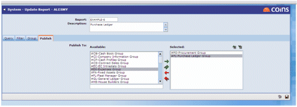
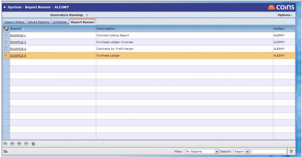

Once a report has been created in Report Writer the author can then publish this report to the appropriate
Thus users who have access both to the Report Runner and the defined User Group will have access to the run the report via the Report Status Workbench.
To publish a report, access the Publish tab and simply select the User Groups as required from the available list using the green and red arrows to select and deselect respectively.
You can use the filter to find the fields you require. Simply type in a few letters of the field or label required and the list will be dynamically filtered.

Those Users with access can then simply run the report from the Report Status Workbench by clicking on the link to the Report Code.
